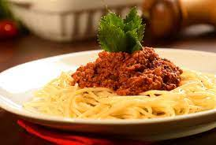

Macarrão à Bolonhesa

Descrição:
A receita de macarrão com carne moída, também conhecida como macarrão à bolonhesa, é um clássico!
Resumo:
PREPARO 45 MIN
RENDIMENTO 6 PORÇÕES
Ingredientes:
- 1 Cebola
- 1 colher de sopa de azeite de oliva
- 5 azeitonas verdes picadas
- 2 latas de molho de tomate pronto
- 2 Cubos de Caldo de carne ou legumes dissolvidos em 100ml de água
- 1 cenoura
- 2 tomates picados
- 500g de Macarrão
- 500g de Carne Moída
Modo de Preparo
- Pique a cebola, refogue por alguns minutos em uma panela com óleo quente até dourar a cebola, mexendo para não queimar.
- Misture a carne moída, deixe cozinhar por alguns minutos.
- Adicione o caldo, o molho, os tomates picados, a cenoura cortada ao meio e mexa bem, deixe cozinhar por aproximadamente 40minutos em fogo baixo com a panela semi tampada. Descarte a cenoura depois que o molho estiver pronto.
- Prepare o macarrão, misture o molho ao macarrão e sirva.
- Acompanhamento Sugerido: Queijo Ralado